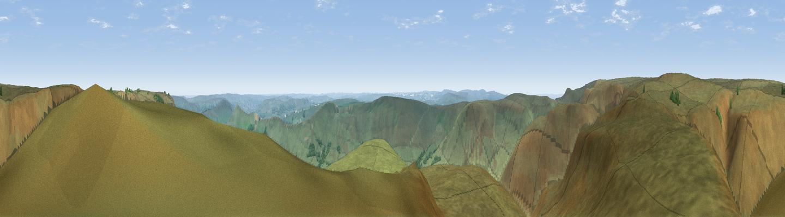

Grindslow Knoll
#6342 in England · top 5% of its area beats it · near Upper BoothWhere it is
The exact computed spot (SK 10977 86826). Click the marker for map links.
The view, rendered

A 360° render of this exact spot computed from the terrain model, tree cover and land cover — summer colours, afternoon light, calibrated against photographs of famous viewpoints. Real trees, hedges and buildings will differ in detail.
The panorama
Grey silhouette: terrain skyline in each direction (720 bearings, Earth curvature and refraction included). Dashed green: skyline with trees (+15 m) and buildings (+8 m) as obstacles. Blue strip: how far the ground is visible on each bearing.
Where the view opens
Wedge length = distance to the farthest visible ground on that bearing (vegetation-aware). Rings at 10, 25 and 50 km.
What fills the view
98% grassland · 2% woodland
Angular shares of the visible panorama (visual magnitude), not map area. Landscape diversity 0.05 (0–1 Shannon).
Key numbers
More beautiful places nearby
The staircase of upgrades: each row has a higher view potential than everything closer. Driving times are estimates from straight-line distance, calibrated against real road routing — check an actual route before setting out.
| Place | Direction | Drive | Score |
|---|---|---|---|
| Viewpoint near Upper Booth | W · 3 km | ~8 min | 70.2 |
| Lord's Seat | S · 3 km | ~8 min | 73.1 |
| Viewpoint near Thornhill | ENE · 9 km | ~18 min | 74.1 |
| Harrop Edge | NW · 16 km | ~28 min | 74.6 |
| Wild Bank | NW · 16 km | ~29 min | 76.2 |
| Viewpoint near Carrbrook | NW · 18 km | ~31 min | 77.1 |
| Viewpoint near Mow Cop | SW · 38 km | ~57 min | 78.9 |
| Viewpoint near Mow Cop | SW · 39 km | ~58 min | 80.2 |
53.37818, -1.83646 · source: osm peak · position refined by local search. Computed location — check access rights before visiting.